The existing Yahoo Messenger layout and source branding remain in place. These captures compare the original Light baseline with the adaptive theme implementation.
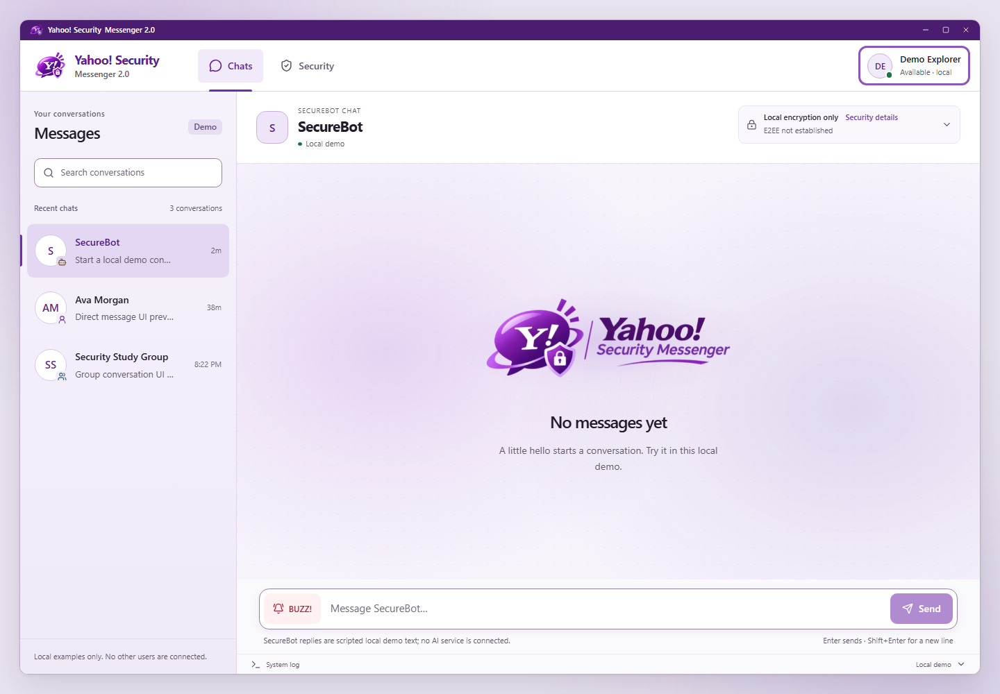
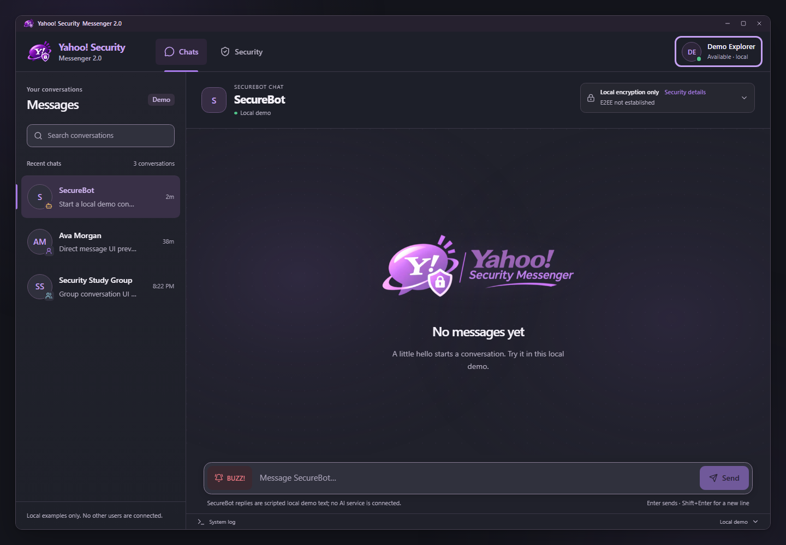
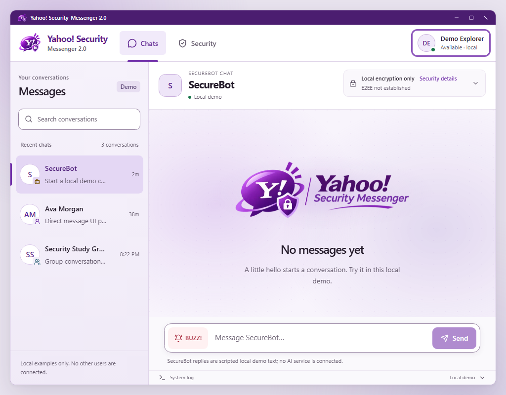
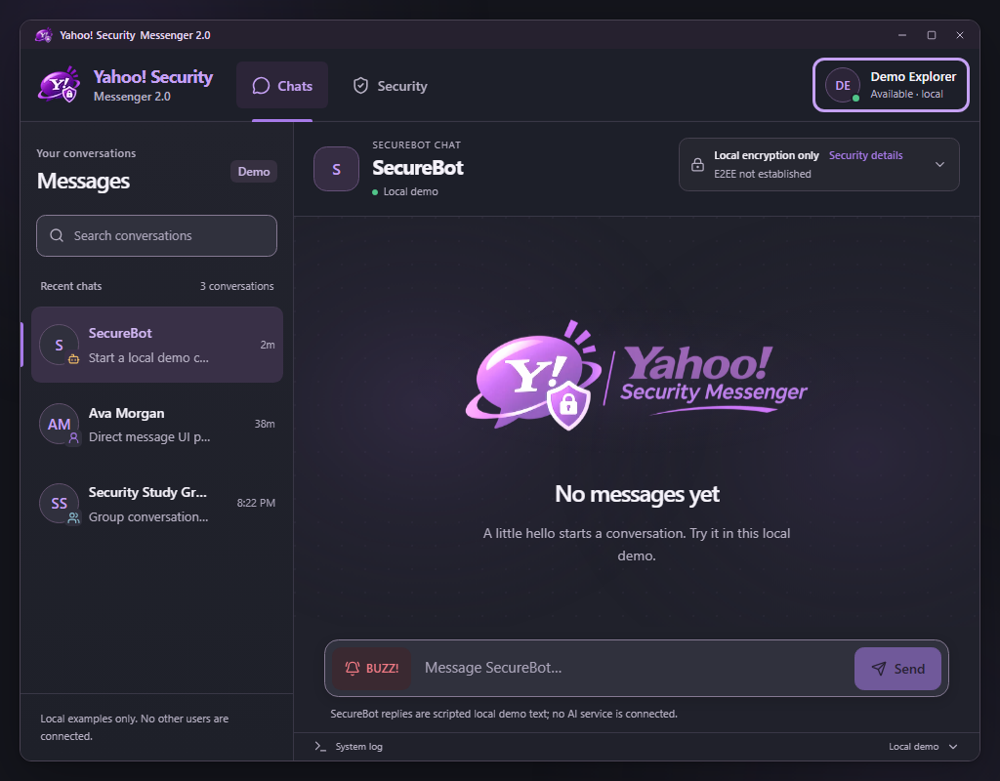
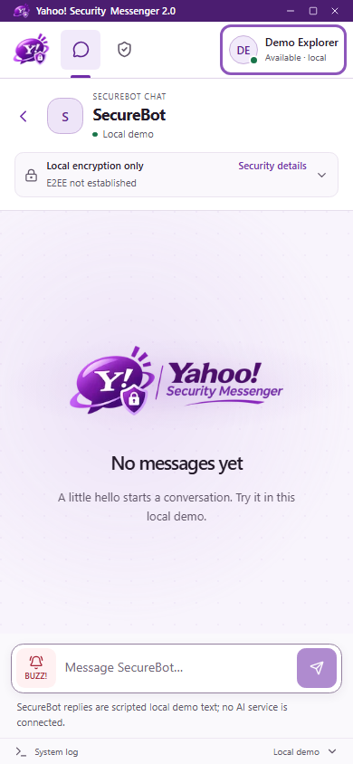
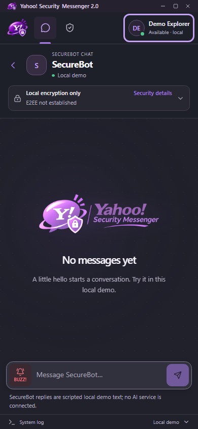
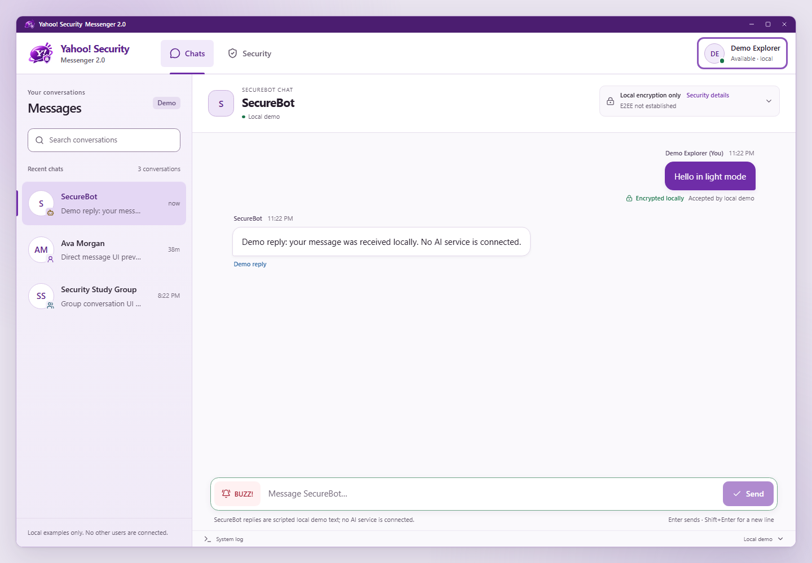
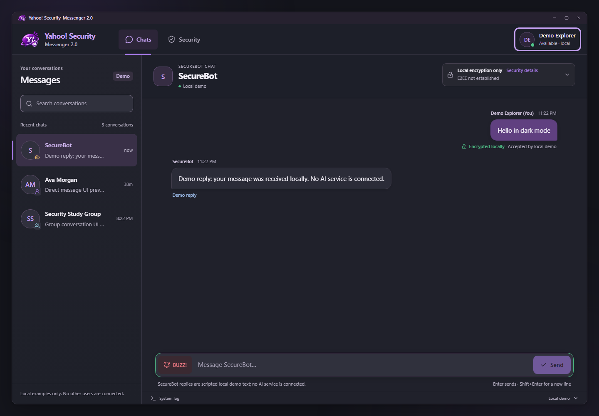
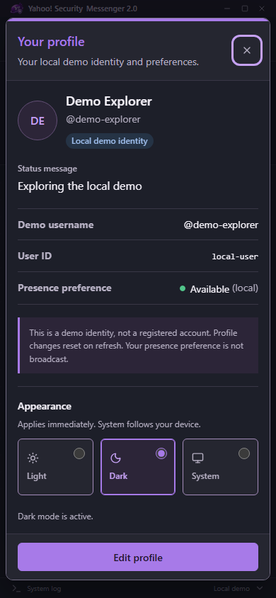
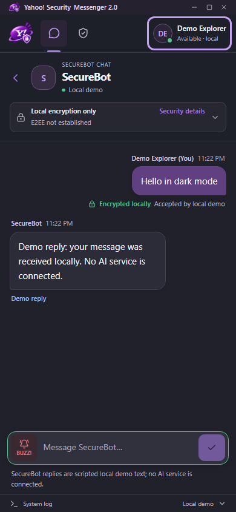
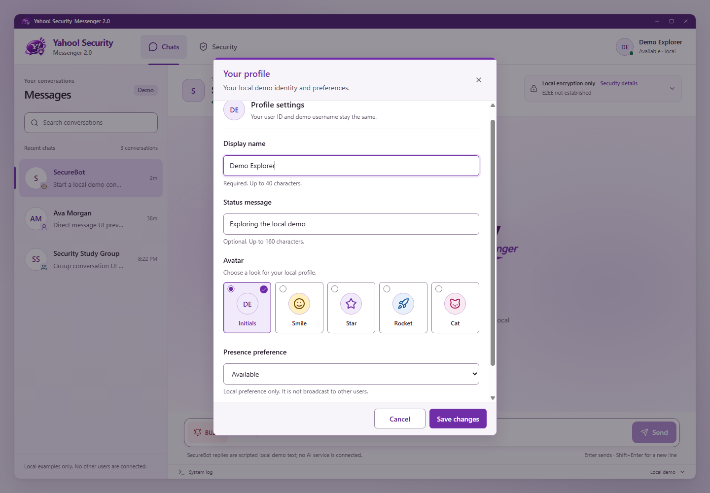
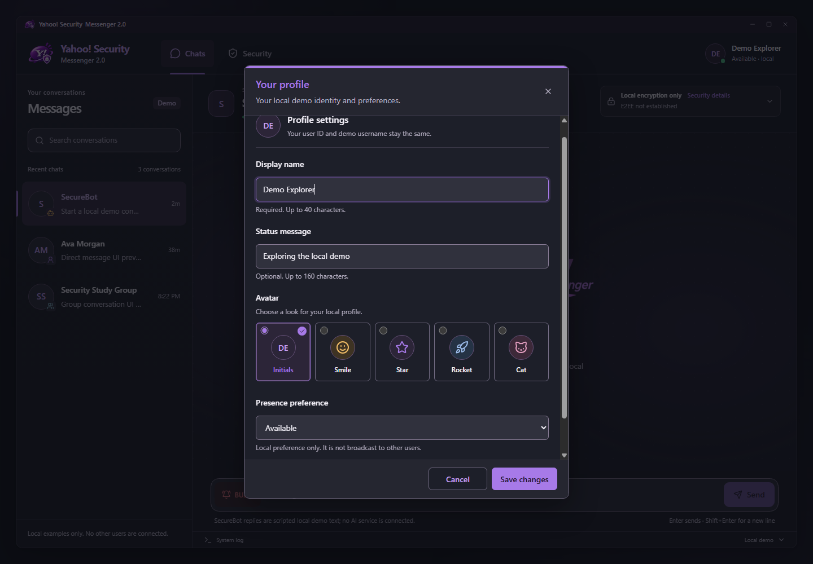
Screenshots show the actual local demo in Chrome. Ambient changes require the motion playback viewer. Security labels describe local encryption; authenticated multi-user E2EE is not established.